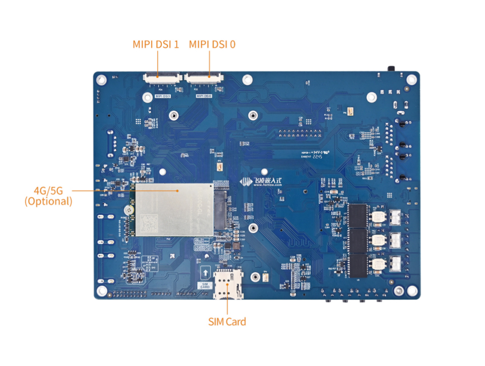
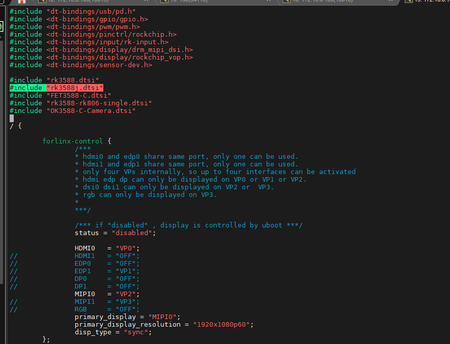
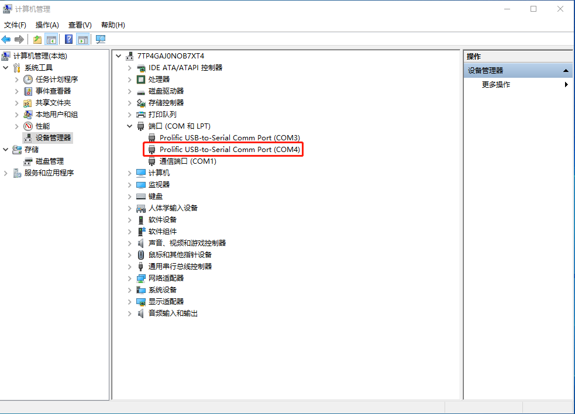
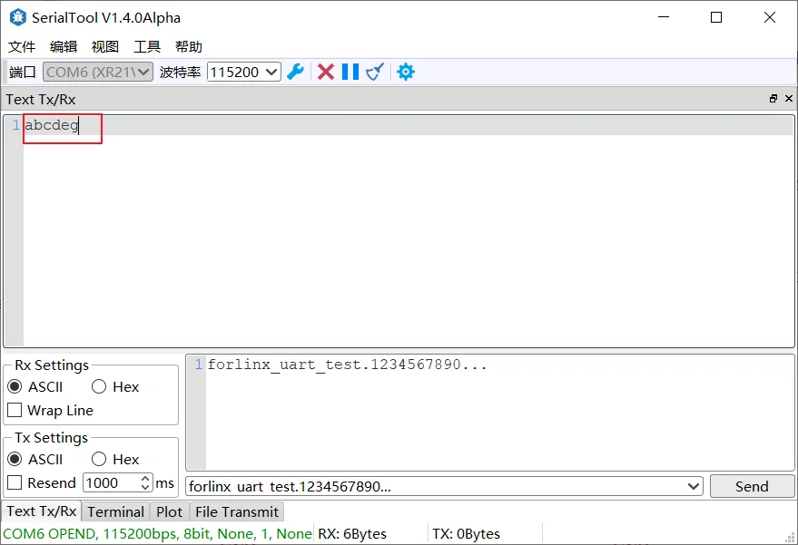
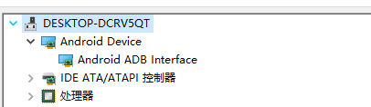
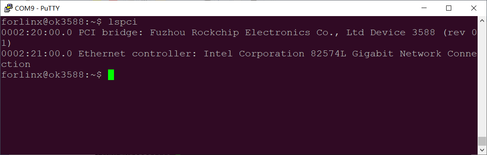

Forlinx Desktop22.04_User’s Manual_V1.1
Document classification: □ Top secret □ Secret □ Internal information ■ Open
Copyright Notice
The copyright of this manual belongs to Baoding Folinx Embedded Technology Co., Ltd. Without the written permission of our company, no organizations or individuals have the right to copy, distribute, or reproduce any part of this manual in any form, and violators will be held legally responsible.
Forlinx adheres to copyrights of all graphics and texts used in all publications in original or license-free forms.
The drivers and utilities used for the components are subject to the copyrights of the respective manufacturers. The license conditions of the respective manufacturer are to be adhered to. Related license expenses for the operating system and applications should be calculated/declared separately by the related party or its representatives.
Overview
This manual is designed to help users quickly familiarize themselves with the product, and understand the interface functions and testing methods. It primarily covers the testing of interface functions on the development board, the methods for flashing images, and troubleshooting procedures for common issues encountered in use. In the process of testing, some commands are annotated to facilitate the user’s understanding, mainly for practical use. Please refer to “OK3588-C_Forlinx Desktop22.04_User’s Compilation Manual” provided by Forlinx for kernel compilation, related application compilation methods and development environment setup.
There are total six parts:
Chapter 1. provides an overview of the product, briefly introducing the interface resources of the development board, the relevant driver paths in the kernel source code, supported flashing and booting methods, as well as explanations of key sections in the documentation;
Chapter 2. is the fast boot/startup of the product, which can adopt two ways of serial port login and network login;
Chapter 3. provides function test of product desktop and QT interface;
Chapter 4. is the command line operation of the product for functional testing;
Chapter 5. is the multimedia test of the product, including the playback test of the camera and the video hardware codec test;
Chapter 6. is the image update of the product, which mainly describes the method of updating the image to the storage device. Users can choose the corresponding flashing mode according to the actual situation.
A description of some of the symbols and formats in the manual:
Format |
Meaning |
|---|---|
Note |
Note or information that requires special attention, be sure to read carefully |
üìö |
Relevant notes on the test chapters |
Ô∏èÔ∏èüõ§Ô∏è Ô∏è |
Indicates the related path |
Blue on gray |
Refers to commands entered at the command line(Manual input required). |
Black font |
Serial port output message after entering a command |
Bold black |
Key information in the serial port output message |
// |
Interpretation of input instructions or output information |
Username@Hostname |
forlinx@ok3588: Development board login account information, |
Example: Check the loading status of the NXP AW9098 module driver:
forlinx@ok3588:~$ lsmod //View loaded modules
Module Size Used by
moal 602112 0
mlan 466944 1 moal
forlinx@ok3588: The username is root and the hostname is forlinx, indicating that the root user is used for operations on the development board.
// : Interpretation of command operations or printed information without input;
lsmod：Blue font on a gray background indicates relevant commands that need to be entered manually;
moal 602112 0：The black font with gray background is the output information after the input command, and the bold font is the key information, which indicates that the NXP AW9098 module driver has been loaded.
Application Scope
This manual is mainly applicable to theForlinx Desktop 22.04operating system of the Forlinx OK3588-C platform. Other platforms can also refer to it. However, there are differences among different platforms, so please make modifications according to the specific use.
Revision History
Date |
User Manual Version |
SoM Version |
Carrier Board Version |
Revision History |
|---|---|---|---|---|
11/04/2023 |
V1.0 |
V1.1 |
V1.1 and Above |
Initial Version |
21/03/2024 |
V1.1 |
V1.1 |
V1.1 and Above |
Adding CPU/GPU/NPU frequency description. |
08/10/2025 |
V1.1 |
V1.1 |
V1.1 and above |
1. The media path “/userdata/media” is changed to “/userdata/media/video; 2. For the camera, the model number13850 is changed to138553; 3. The video hardware encoding changes from H.265 to a maximum resolution of 8K@30. |
1. OK3588 Development Board Description
1.1 OK3588 Development Board Brief
RK3588 is a low-power, high-performance processor based on ARM64 architecture, which includes 4-core Cortex-A55 and 4-core Cortex-A76 as well as independent NEON processor and neural network processor NPU, and it can be applied to computers, cell phones, personal mobile Internet, and digital multimedia devices.
The connection of OK3588 SoM and the carrier board is board-to-board, and the main interfaces are as follows:
Front

Back
Note：
The software manual no longer includes hardware parameter details. Prior to software development, please read the “OK3588-C_Hardware User’s Manual” located at “Hardware Information\User Manual” path. This manual clarifies product naming conventions and specific hardware configuration. It aids in understanding and utilizing the product effectively.
1.2 CPU/GPU/NPU Frequency Description
RK3588J industrial grade SoM frequencies are described below:
**Note: For the industrial-grade RK3588J SoM, to better test the maximum performance of this SOC, starting from version R4 and subsequent versions, the SoM in the user materials will default to operate in overclocking mode (Without performance requirements, it is recommended to modify it to the normal mode). **
Refer to “Rockchip RK3588J Datasheet V1.1-03/08/2023.pdf ”
Table 3-2 Recommended operating conditions
Maximum CPU A76 frequency, normal mode ① |
1.6GHz |
|---|---|
Maximum CPU A76 frequency, overclocking mode ② |
2.0GHz |
Maximum CPU A55 frequency, normal mode ① |
1.3GHz |
Maximum CPU A55 frequency, overclocking mode ② |
1.7GHz |
Maximum GPU frequency, normal mode ① |
700MHz |
Maximum GPU frequency, overclocking mode ② |
850MHz |
Maximum NPU frequency, normal mode ① |
800MHz |
Maximum NPU frequency, overclocking mode ② |
950MHz |
Normal mode indicates that the chip is operating at a safe voltage and frequency. For industrial environments, it is highly recommended to keep it in normal mode to reasonably ensure longevity;
Overclocking mode will bring higher frequency, and the corresponding voltage will also increase. When running in overclocking mode for a long time, the life of the chip may be shortened, especially in high temperature conditions.
To switch to “normal mode”, you need to add the following to the reference in the kernel device tree #include “rk3588j.dtsi”,
path: OK3588_Linux_fs/kernel/arch/arm64/boot/dts/rockchip/OK3588-C-common.dtsi

RK3588 commercial grade SoM frequencies are described below:
Refer to “Rockchip RK3588 Datasheet V1.7-17/11/2023.pdf ”
Table 3-2 Recommended operating conditions
Maximum CPU A76 frequency |
2.2-2.4 GHz |
|---|---|
Maximum CPU A55 frequency |
1.8GHz |
Maximum GPU frequency |
1GHz |
Maximum NPU frequency |
1GHz |
1.3 Introduction to Linux 5.10.160 System Software Resources
Device |
Location of driver source code in the kernel |
Device Name |
|---|---|---|
LCD Backlight Driver |
drivers/video/backlight/pwm_bl.c |
/sys/class/backlight |
USB Port |
drivers/usb/storage/ |
|
USB Mouse |
drivers/hid/usbhid/ |
/dev/input/mice |
Ethernet |
drivers/net/ethernet/stmicro/stmmac |
|
SD/micro TF card driver |
drivers/mmc/host/dw_mmc-rockchip.c |
/dev/block/mmcblk1pX |
EMMC Driver |
drivers/mmc/host/dw_mmc-rockchip.c |
/dev/block/mmcblk2pX |
OV13855 |
drivers/media/i2c/ov13855.c |
/dev/videoX |
LCD Controller |
drivers/gpu/drm/rockchip/rockchip_drm_vop.c |
|
MIPI CSI |
drivers/phy/rockchip/phy-rockchip-mipi-rx.c |
|
MIPI DSI |
drivers/phy/rockchip/phy-rockchip-inno-mipi-dphy.c |
|
LCD Touch Driver |
drivers/input/touchscreen/goodix.c |
/dev/input/eventX |
RTC Real Time Clock Driver |
drivers/rtc/rtc-rx8010.c |
/dev/rtc0 |
serial port |
drivers/tty/serial/8250/8250_dw.c |
/dev/ttySX |
Key Driver |
drivers/input/keyboard/adc-keys.c |
/dev/input/eventX |
LED |
drivers/leds/leds-gpio.c |
|
I2S |
sound/soc/rockchip/rockchip_i2s.c |
|
Audio Driver |
sound/soc/codecs/rk817_codec.c |
/dev/snd/ |
PMIC |
drivers/mfd/rk808.c |
|
PCIE |
drivers/pci/controller/pcie-rockchip.c |
|
Watchdog |
drivers/watchdog/dw_wdt.c |
|
SPI |
drivers/spi/spi-rockchip.c |
|
PWM |
drivers/video/backlight/pwm_bl.c |
1.4 EMMC Memory Partition Table
The following table is the eMMC memory partition information of Ubuntu operating system (the size of a block is 512 bits when calculating):
Partition Index |
Name |
Offset / block |
Size/block |
content |
|---|---|---|---|---|
N/A |
security |
0x00000000 |
0x00004000 |
MiniLoaderAll.bin |
1 |
uboot |
0x00004000 |
0x00004000 |
uboot.img |
2 |
misc |
0x00006000 |
0x00002000 |
misc.img |
3 |
boot |
0x00008000 |
0x00020000 |
boot.img |
4 |
recovery |
0x00028000 |
0x00050000 |
recovery.img |
5 |
oem |
0x01c78000 |
0x00040000 |
oem.img |
6 |
rootfs |
0x00078000 |
0x01c00000 |
rootfs.img |
7 |
userdata |
0x01cb8000 |
userdata.img |
2. Fast Startup
2.1 Preparation Before Startup
The OK3588 development board has two system login methods, serial and network login.
Hardware preparation before system startup:
12V3A DC power cable
Debugging serial cable (Serial Login)
The debug serial port on the development board is a Type-C USB jack, so you can use a USB to Type-C cable to connect the development board to a PC and then check the board’s status.
Network cable (for network login)
Screen: Connect the screen according to the development board interface (optional if display is not needed).
2.2 Debugging Serial Driver Installation
The debugging serial port of the OK3588 - C platform uses a Type - C interface. There is an on - board USB to UART chip, so there’s no need to purchase a USB to serial port debugging tool. It is extremely simple and convenient to use.
To install the driver, please use the driver package CP210x _ VCP _ Windows _ XP _ Vista. Zip provided in the \ Linux \ Tools \ directory of the user profile.
Run CP210xVCPInstaller_x64.exe directly after unzipping is complete, to ensure the latest driver is installed, please click driver uninstall first, then driver install.
2.3 Serial Login
2.3.1 Serial Port Connection Settings
Description:
Serial port settings: baud rate 115200, data bit 8, stop bit 1, no parity bit, no flow control;
Serial terminal login is forlinx user, password forlinx; interface login is forlinx user, no account password login;
Software requirements: For Windows PC, users must install terminal emulation software, with multiple options available in the market for their preference and needs.
In the following, take the putty terminal software as an example to introduce the serial port login method:
Step 1: Connect the serial port number of the computer—check the serial port number from the device manager (Based on the port actually recognized by the computer );
Step 2: Open and set up putty, then set the“ line according to the COM port of the computer used, baud rate 115200;

Step 3: After the setting, input the COM port used by the computer in Saved Sessions. The following figure takes COM3 as an example, save the settings, open the serial port again later, and click on the saved port number;

Step 4: Turn on the power switch of the development board, and the serial port will output the print information until the login interface appears;
Ubuntu 22.04.3 LTS ok3588 ttyFIQ0
ok3588 login: root //Enter account root, no password
Welcome to Ubuntu 22.04.3 LTS (GNU/Linux 5.10.160 aarch64)
* Documentation: https://help.ubuntu.com
* Management: https://landscape.canonical.com
* Support: https://ubuntu.com/advantage
Extended Security Maintenance (ESM) Applications are not enabled.
0 updates can be applied immediately.
Enable ES Aps for future additional security updates See https://ubuntu.com/esm or run: sudo pro status
Last login: Wed Sep 20 00:34:57 UTC 2023 on ttyFIQ0
root@ok3588:~#
2.3.2 Serial Login Common Problems
If the computer port does not have a serial port, you can connect it to the development board using a USB to serial converter cable. To use the USB to serial converter cable, you need to install the corresponding driver program.
It is better to use a good quality cable to avoid error codes.
2.4 Network Login Methods
2.4.1 Network Connection Test
Description:
When leaving the factory, the default configuration of the network card is dynamic IP. For the method of setting static IP, please refer to the test section of “Ethernet Configuration”;
The computer and board should be on the same network segment for testing.
Before logging into the network, ensure that the network connection between the computer and the development board is functioning properly. The connection status can be tested using the ping command. The specific method is as follows:
1. Connect the development board’s eth0 interface to the computer using an Ethernet cable. Power on the board and boot the kernel. Confirm the blue heartbeat LED is blinking. Check the network card connection, ensuring its LED flashes rapidly. Once confirmed, proceed with testing the network connection;
2. Close the computer firewall (General computer operations, not described here in detail), then open the computer’s run command;
3. Use cmd to open the administrator interface , and the ping command to test the network connection status of the computer and the development board.
A data return indicates a normal network connection.
2.4.2 SSH Server
Description:
When leaving the factory, the default configuration of the network card is dynamic IP. For the method of setting static IP, please refer to the test section of “Ethernet Configuration”;
Users: forlinx, Password: forlinx;
If using root login, we need to change the password before using ssh login and scp for file transfer.
1. Use ssh to log in the development board;
Click “Open”, the following dialog box will appear, click “Accept” to enter the login interface;
login as: forlinx
forlinx@192.168.8.156's password: //Enter the password forlinx for the forlinx account
Welcome to Ubuntu 22.04.3 LTS (GNU/Linux 5.10.160 aarch64)
* Documentation: https://help.ubuntu.com
* Management: https://landscape.canonical.com
* Support: https://ubuntu.com/advantage
Extended Security Maintenance (ESM) Applications are not enabled.
0 updates can be applied immediately.
Enable ES Aps for future additional security updates
See https://ubuntu.com/esm or run: sudo pro status
The programs included with the Ubuntu system are free software;
the exact distribution terms for each program are described in the
individual files in /usr/share/doc/*/copyright.
Ubuntu comes with ABSOLUTELY NO WARRANTY, to the extent permitted by
applicable law.
To run a command as administrator (user "root"), use "sudo <command>".
See "man sudo_root" for details.
forlinx@ok3588:~$
2.4.3 SFTP
Path: OK3588-C (desktop) User Profile\Tool\FileZilla*
The OK3588 development board supports SFTP service and it is automatically enabled at startup, so it can be used as an SFTP server after setting the IP address. The following describes how to utilize the FTP tool for file transfer.
Install the FileZilla tool on Windows and follow the steps shown in the image below to configure it. Use “forlinx” as both the username and password.
Open the filezilla tool, click on File and select Site Manager.
After successful login, you can upload and download.
2.5 Screen Switching
OK3588 supports various screen interfaces such as MIPI DSI, HDMI, eDP, DP, RGB, etc., and can simultaneously perform mirroring and independent display for up to four screens. Currently there are three screen switching methods: Uboot menu dynamic control; kernel device tree designation; DisplayHwConfig application control.
OK3588 contains 4 display controllers, i.e. 4 VP. Supports up to 4 screens simultaneously. The maximum resolution of VP0 is 7680x4320; the maximum resolution of VP1 is 4096x4320; the maximum resolution of VP2 is 4096x4320; the maximum resolution of VP3 is 2048x1080.
2.5.2 Kernel Device Tree Specification
This method does not require the connection of a serial terminal, and the system image defaults to the desired configuration selection, which is suitable for mass production. However, you need to manually modify the device tree and regenerate the system image once again.
Note: This method has higher priority than the uboot screen selection, and the uboot selection will not take effect after the device tree is modified.
The device tree path :kernel/arch/arm64/boot/dts/rockchip/OK3588-C-common.dtsi
In the kernel source code, open the device dtsi file and find the following node:
The node has a default disabled state and needs to be changed to an okay enabled node. Change according to screen requirements.
Parameter Description:
Parameter |
Meaning |
|---|---|
status |
Describe the node state: disabled is for off, okay is for on |
HDMI0 |
Specify the VP assigned to HDMI0 |
HDMI1 |
Specify the VP assigned to HDMI1 |
EDP0 |
Specifies the VP assigned to EDP0 |
EDP1 |
Specify the VP assigned to EDP1 |
DP0 |
Specify the VP assigned to DP0 |
DP1 |
Specify the VP assigned to DP1 |
MIPI0 |
Specify the VP assigned to MIPI0 |
MIPI1 |
Specify the VP assigned to MIPI1 |
RGB |
Specify the VP assigned to RGB |
primary_display |
Specify the main screen display |
primary_display_resolution |
Specify the resolution to be used for the main screen with HDMI |
Users need to change the setting parameters as required. After saving, it is necessary to recompile and generate an image.
An annotated description of the node:
1. HDMI0 and EDP0 share the same port, and only one of them can be used at a time;
2. HDMI1 and EDP1 share the same port, and only one of them can be used at a time;
3. There are only four VPs internally, so a maximum of four interfaces can be activated;
4. HDMI, EDP, and DP can only be displayed on VP0, VP1, or VP2;
5. DSI0 and DSI1 can only be displayed on VP2 or VP3;
6. RGB can only be displayed on VP3.
So the optional parameters for HDMI0/1, EDP0/1, DP0/1 are: “VP0”, “VP”, “VP2”, “OFF”;
DP0/1 optional parameters are: “VP2”, “VP3”;
The RGB optional parameter is: “VP3”;
The primary_display parameter depends on the actual display interface assigned to get the VP.
Note: When modifying the device tree, you need to follow the annotation rules to avoid using conflicts. The driver does not detect whether the forlinx-control configuration conforms to the rules. An error in the setting will cause abnormal display.
For the display interface set to “OFF”, blocking, deleting, or retaining is possible. It’s not necessary to set all four VP.
Examples:
Assign VP0 to HDMI0, VP1 to HDMI1, VP2 unused, and VP3 for RGB use. Set the main screen to HDMI0.
After saving, recompile to generate the image.
2.6 System Shutdown
In general, the power can be turned off directly. If there is data storage, function use, or other operations, avoid turning off the power arbitrarily during operation to prevent irreversible damage to the file. In such cases, only re-flashing the firmware can resolve the issue. To ensure that data is not completely written, enter the sync command to complete data synchronization before turning off the power.
Note: For products designed based on the SoM, if there are scenarios where accidental power loss causes the system to shut down unexpectedly, measures such as adding power-loss protection can be incorporated into the design.
3. OK527 Platform Interface Function Use and Test
This section explains how to use extended interfaces on the development board in desktop operating systems and QT interfaces. The provided testing program is for reference only; users should adjust it as needed.
Test program source code path:
User profiles/linux/source code (OK3588-desktop-release/app/forlinx/forlinx_ubuntu_qt/)
3.1 Desktop Function Test
Forlinx Desktop 22.04 system is a desktop operating system built by Forlinx on the basis of Ubuntu. It is fully compatible with Ubuntu 22.04 and supports apt-get. Compared with the traditional Linux system, it is easier to use.
After the development board boots, the desktop display is as follows:
3.1.1 Virtual Keyboard Test
In the desktop environment, to facilitate text input when there is no physical keyboard, a virtual keyboard is installed in the OK3588 Forlinx Ubuntu desktop environment. You can swipe up from the bottom of the screen to access it.
Note: The virtual keyboard is disabled when a USB keyboard is connected.
3.1.2 Audio and Video Playback
Click the icon to enter the video player, which can play music and video.
Click on the icon SMPlayer as shown in the picture, and select the path of your music or video file such as /home/forlinx/test.wav, then you can play the audio and video; ubuntu system default configuration SMPlayer isSPKOUToutput; plug your headphones or speakers into theSPKOUTinterface, you can hear the sound. At this time, video soft solution is used for video playback.
3.1.3 Network Configuration Test
When OK3588 is started, dhclient starts the network card eth0 by default. If you want to set it to a static IP, you can set it as follows:
Click the network settings icon in the upper right corner:
Click the “Wired Settings” button.
Set and configure in the Network option interface, and click the “IPv4” tab.
The “Manual” interface is configured as follows.
Click “Apply” and restart the board to change to the static IP.
3.1.4 Multi-screen Mirror and Joint Displays
Note: The current version only supports the combination of two HDMI and DP, as well as two MIPI screens for mirror display; if there are more than two screens, they will be forcibly configured as join displays.
Mirrored configuration
Open “Displays” in the settings, select “Mirror” and click “Apply”.
Extended configuration
Select “Join Displays” and click “Apply”.
Note: If there are more than two screens, they will be forcibly configured as join displays.
Single Display
The option “Single Display” can be selected to specify the display interface.
Primary and Secondary Display Settings
Click “Primary Display “ on the Displays screen.
3.1.5 WIFI Test
OK3588 platform supports 2 x WIFI Bluetooth 2-in-1 modules: AW-XM458. WIFI supports 2.4 G and 5G bands.
Right click “Display Settings” in the blank space and select “Wi-Fi”.
Select the name of the hotspot to connect to.
Enter the password and click the connect button.
3.1.6 Bluetooth Test
OK3588 supports two models of AW-XM458 modules and integrates Bluetooth functions. This section demonstrates the use of Bluetooth for data transmission between the mobile phone and the development board and supports Bluetooth 5.0.
1. Loading module drivers
Plug in the module when the power is off, and start when the power is on.
forlinx@ok3588:~# sudo lsmod
2. Test Method:
Click “Bluetooth:” in the settings.
Click “Confirm”, and the PC prompts that the connection is successful.
Click the name of the Bluetooth device to be sent and click “Send files …” Button to perform a file sending test.
Select “Accept File” on the phone:
3.2 Qt Tests
The default file system includes Qt 5.15.3, so in this section, we will use Qt test programs for related work. Qt’s test program requires commands to be entered into the Ubuntu desktop application.
Test Qt program.
1. Open the Xterm on the Ubuntu desktop
2. Enter the command in the Xterm
forlinx@ok3588:~$ sudo fltest_qt_backlight //Example running qt program
Note: You need to add sudo to run QT.
3.2.1 4G/5G Test
“4G/5G” test program is used to test the OK3588 external 4G module (EM05)/5G module (RM500U, RM500Q). Before the test, please power off the development board, connect the 4G/5G module, and insert the SIM card.
Start the development board, run the command fltest_qt_4g at the command line terminal, and open the test application
forlinx@ok3588:~$ sudo fltest_qt_4g //Run qt program
Click the “connect” button, the program will automatically enter the dial-up process and get the IP settings DNS, etc., wait a few seconds, and click the ping button to test. After obtaining the IP address successfully, click the ping button to test.
3.2.2 UART Test
UART2, UART4, UART6, UART9, a total of four serial ports led out from the OK3588 carrier board; UART2 for debugging serial port, UART6 for Bluetooth serial port, and UART9 for 485 serial port. The default device names of UART4 and UART9 in the development board are ttyS4 and ttyS9 respectively.
UART |
Device Nodes |
Description |
|---|---|---|
UART2 |
/dev/ttyS2 |
Debugging serial port cannot be used directly for this test. |
UART4 |
/dev/ttyS4 |
TTL level, pinned-put from P11, can be used for test. |
UART6 |
/dev/ttyS6 |
It is used for Bluetooth and is not separately pinned out and can’t be directly used for this test. |
UART9 |
/dev/ttyS9 |
RS485 |
Use the command fltest_qt_terminal to open the uart’s qt test program (refer to Setup at the beginning of this section for qt test method). This test uses UART4 (ttyS4) to perform serial port test by sending and receiving data between the development board’s UART and the computer’s serial port tool software.
1. After connecting the development board and the computer via a TTL to USB module, power on the development board. Check in the computer’s device manager, it should be recognized as COM4 (please adjust the settings according to the actual COM port recognized);

2. Open the computer serial port tool, set the serial port parameters: baud rate 115200, 8 data bits, 1 stop bit, no parity, no flow control, and open the serial port;

3. Run the command fltest_qt_terminal on the command line terminal to open the test application.
forlinx@ok3588:~$ sudo fltest_qt_terminal //Run qt program
Click the Setup button in the upper left corner to set the serial port parameters to be consistent with the parameters of the serial port tool on the computer side, as shown below:
to set the serial port parameters to be consistent with the parameters of the serial port tool on the computer side, as shown below:
Relevant Parameter |
Meaning |
|---|---|
Select Serial Port |
Setting the serial port (select UART5, i.e. ttyS5) |
BaudRate |
Set baud rate (115200) |
Data bits |
Set data bits (8 bits) |
Parity |
Set parity bit (no parity) |
Stop bits |
Set stop bit (1 bit) |
Flow control |
Set flow control (no flow control) |
After setting the serial port parameters, click . Connect button. At this time, the test program can carry out data receiving and sending test.
. Connect button. At this time, the test program can carry out data receiving and sending test.
4. The serial port tool of the computer sends: “forlinx_uart_test.1234567890…”, the test interface will receive the data:

Click the test interface to pop up the soft keyboard, enter “abcdefg”, press Enter on the soft keyboard to send data to the serial port tool on the computer side:

Data received by the serial port tool on the computer side:

3.2.3 Database Test
Open the test application by running the command fltest_qt_books in a command line terminal
forlinx@ok3588:~$ sudo fltest_qt_books //Run qt program
3.2.4 OpenGL Test
OK3588 supports OpenGL ESv2.1.
Open the test application by running the command fltest_qt_deform in the command line terminal
forlinx@ok3588:~$ sudo fltest_qt_deform //Run qt program
3.2.5 RTC Test
OK3588 platform has a PCF8563 RTC chip onboard, but Ubuntu defaults to network time sync. To use RTC time, follow these steps:
In the settings, choose “Date & Time,” click “Unlock,” enter the user password, and select to disable automatic time updates. By default, automatic time updates are already disabled.
Run the command at the command line terminal fltest_qt_rtc to open the test application.
forlinx@ok3588:~# sudo fltest_qt_rtc
Click the set button, modify the time, and click save.
Power-off and restart to verify writing to the RTC.
3.2.6 Key Tests
“fltest_qt_keypad” is used to test whether the platform’s own keys are available.
Run the command at the command line terminal fltest _ QT _ keypad to open the test application
forlinx@ok3588:~# sudo fltest_qt_keypad
The OK3588 platform has five physical buttons VOL-, VOL +, HOME and ESC corresponding to V +, V-, Home and ESC respectively. When the button is pressed, the corresponding button in the test application will turn blue, indicating that the button is normal.
3.2.7 Watchdog Tests
“fltest_qt_watchdog” is an application used to test the watchdog status.
Open the test application by running the command fltest_qt_watchdog in a command line terminal
forlinx@ok3588:~# sudo fltest_qt_watchdog
Check feed dog and click the open watchdog key, then the watchdog will be activated, the program will carry out the feeding operation, and the system will not reboot under normal circumstances; when unchecking feed dog and clicking open watchdog key, the watchdog function will be activated, the program will not carry out the feeding operation, and the system enters into a reboot after the watchdog is activated for about 10s, which indicates that the watchdog function is normal.
3.2.8 Backlight Test
“fltest_qt_backlight” is the lcd backlight adjustment application; click to open the interface as follows (qt test method refer to the beginning of this section settings):
Drag the slider in the interface to set the Lcd backlight brightness, level 0 is no backlight, level 255 is the highest level.
4. OK3576 Command Line Tool Application and Test
OK3588 platform has various built-in command line tools available to users.
Test program source code path:
User profiles/linux/source code (OK3588-desktop-release/app/forlinx/forlinx_cmd/)
Testing program path: /usr/bin
4.1 System Information Query
To view kernel and cpu information, enter the following command
root@ok3588:~# uname -a
Linux ok3588 5.10.160 #1 SMP Mon Sep 11 09:48:33 CST 2023 aarch64 aarch64 aarch64 GNU/Linux
View operating system information:
root@ok3588:~# cat /etc/issue
Ubuntu 22.04.3 LTS \n \l
View environment variable information:
root@ok3588:~# env
SHELL=/bin/bash
GST_V4L2_PREFERRED_FOURCC=NV12:YU12:NV16:YUY2
GST_VIDEO_CONVERT_PREFERRED_FORMAT=NV12:NV16:I420:YUY2
GST_MPP_NO_RGA=1
GST_GL_PLATFORM=egl
COGL_DRIVER=gles2
GST_V4L2_USE_LIBV4L2=1
GST_INSPECT_NO_COLORS=1
GST_DEBUG_NO_COLOR=1
PWD=/root
LOGNAME=root
XDG_SESSION_TYPE=tty
SYSTEMD_EXEC_PID=987
TZ=Asia/Shanghai
MOTD_SHOWN=pam
HOME=/root
LANG=en_US.UTF-8
…
4.2 Frequency Test
Note: Quad-core A55 is cpu0, cpu1, cpu2, cpu3; Quad-core A76 is cpu5, cpu6, cpu7, cpu8. This process takes cpu0 as an example: the actual process of cpu1, cpu2, cpu3 will be changed at the same time; cpu4, cpu5, cpu6, cpu7 will not affect each other when operated individually.
All cpufreq governor types supported in the current kernel:
root@ok3588:~# cat /sys/devices/system/cpu/cpu0/cpufreq/scaling_available_governors
conservative ondemand userspace powersave performance schedutil
The userspace indicates user mode, in which other users’ programs can adjust the CPU frequency.
View the current CPU supported frequency level.
root@ok3588:~# cat /sys/devices/system/cpu/cpu0/cpufreq/scaling_available_frequencies
408000 600000 816000 1008000 1200000 1296000 1416000 1608000 1704000
Set to user mode and modify the frequency to 1704000：
root@ok3588:~# echo userspace > /sys/devices/system/cpu/cpu0/cpufreq/scaling_governor
root@ok3588:~# echo 1704000 > /sys/devices/system/cpu/cpu0/cpufreq/scaling_setspeed
View the modified current frequency:
root@ok3588:~# cat /sys/devices/system/cpu/cpu0/cpufreq/cpuinfo_cur_freq
1704000
4.3 Temperature Test
View the temperature value:
root@ok3588:~# cat /sys/class/thermal/thermal_zone0/temp
40692
The temperature value is 40.6°C.
4.4 DDR Test
root@ok3588:~# memtester 1024 1
memtester version 4.5.1 (64-bit)
Copyright (C) 2001-2020 Charles Cazabon.
Licensed under the GNU General Public License version 2 (only).
pagesize is 4096
pagesizemask is 0xfffffffffffff000
want 1024MB (1073741824 bytes)
got 1024MB (1073741824 bytes), trying mlock ...locked.
Loop 1/1:
Stuck Address : ok
Random Value : ok
Compare XOR : ok
Compare SUB : ok
Compare MUL : ok
Compare DIV : ok
Compare OR : ok
Compare AND : ok
Sequential Increment: ok
Solid Bits : ok
Block Sequential : ok
Checkerboard : ok
Bit Spread : ok
Bit Flip : ok
Walking Ones : ok
Walking Zeroes : ok
8-bit Writes : ok
16-bit Writes : ok
Done.
4.5 Watchdog Test
Watchdog is a function often used in embedded systems. The device node of watchdog in OK3588 is /dev/watchdog. This test provides two test procedures, and the user selects one test according to the actual situation.
Start the watchdog, set the reset time to 10s, and kick the dog regularly.
If usingfltest_watchdog, it turns on the watchdog and kick it, so the system does not reboot.
root@ok3588:~# fltest_watchdog
Watchdog Ticking Away!
When using ctrl+c to end the test program, kicking the dog is stopped, the watchdog is on, and the system is reset after 10s.
If you do not want to reset, enter the shutdown watchdog command within 10s after finishing the program:
root@ok3588:~# fltest_watchdog -d //Turn off the watchdog
Watchdog card disabled.
Start watchdog, set reset time 10s, do not kick the watchdog.
Execute the command fltest_watchdogrestart, this command will turn on the watchdog but will not kick the watchdog and the system will reboot after 10s.
root@ok3588:~# fltest_watchdogrestart
Restart after 10 seconds
4.6 RTC Function Test
Note: Ensure that button cell batteries are installed on the board and the battery voltage is normal.
RTC test: The main way to set the software and hardware time is by using the date and hwclock utilities. When performing the board power-down and power-up test, the software clock reads whether the RTC clock is synchronized or not.
Time setting
root@ok3588:~# date -s "2023-09-11 15:53:00" // Set the software time
Mon Sep 11 03:53:00 PM CST 2023
root@ok3588:~# hwclock -wu // Synchronize the software time to the hardware time
root@ok3588:~# hwclock -r // Display the hardware time
2023-09-11 15:53:08.232716+08:00
Then power down and power up the board, enter the system, and read the system time. After that, we can see that the time has synchronized.
root@ok3588:~# date
Mon Sep 11 03:54:14 PM CST 2023
4.7 Key Test
Use the fltest_keytest command line tool to test the keys. fltest_keytest currently supports the test of four keys on the carrier board, VOL+, VOL-, MENU, and ESC, with key codes 115, 114, 139, and 158, respectively.
Execute the following command:
root@ok3588:~# fltest_keytest
At this point, press the lift button in sequence, and the following can be output on the terminal:
Available devices:
/dev/input/event5: adc-keys
key115 Presse // VOL+press
key115 Released // VOL+release
key114 Presse // VOL-press
key114 Released // VOL-release
key139 Presse // MENU press
key139 Released // MENU relase
key158 Presse // ESC press
key158 Released // ESC release
4.8 UART Test
UART2, UART4, UART6, UART9, a total of four serial ports led out from the OK3588 carrier board; UART2 for debugging serial port, UART6 for Bluetooth serial port, and UART9 for 485 serial port. The default device names of UART4 and UART9 in the development board are ttyS4 and ttyS9 respectively.
UART |
Device Nodes |
Description |
|---|---|---|
UART2 |
/dev/ttyS2 |
Debugging serial port cannot be used directly for this test. |
UART4 |
/dev/ttyS4 |
TTL level, pinned-put from P11, can be used for test. |
UART6 |
/dev/ttyS6 |
It is used for Bluetooth and is not separately pinned out and can’t be directly used for this test. |
UART9 |
/dev/ttyS9 |
RS485 |
In this test, UART4 (ttyS4) is used. According to the development board schematic diagram, short - circuit the send and receive pins of UART4, which correspond to PIN7 and PIN10 respectively. Serial port testing is performed by sending and receiving data between the development board’s UART and the computer’s serial port tool software.

1. After connecting the development board and the computer via a TTL to USB module, power on the development board. Check in the computer’s device manager, it should be recognized as COM4 (please adjust the settings according to the actual COM port recognized);

2. Open the computer serial port tool, set the serial port parameters: baud rate 115200, 8 data bits, 1 stop bit, no parity, no flow control, and open the serial port;

Enter the following command into the serial port of the development board (the test program has a fixed baud rate of 115200):
root@ok3588:~# fltest_uarttest -d /dev/ttyS4
Printing information is as follows:
Welcome to uart test
Send test data:
forlinx_uart_test.1234567890... //Send the data
The test program automatically se”forlinx_uart_test.1234567890…”. The message is received when the serial aide is viewed:
The computer serial port tool sends "forlinx_uart_test.1234567890...". At this time, the development board receives the information, and the relevant printed information is as follows:
Welcome to uart test
Send test data:
forlinx_uart_test.1234567890...
Read Test Data finished,Read:
forlinx_uart_test.1234567890... //Receive the data
4.9 ADC Test
OK3588-C development board provides an internal 8-channel ADC. An adjustable resistor connects to the saradc2, saradc4, saradc5, saradc6, and saradc7 channels, and saradc2 is selected for testing. The ADC pin hardware diagram is shown below, and the voltage is inputted at pin 1 of P12. The current chip uses a 1.8V reference voltage corresponding to a 12-bit ADC maximum of 4096.

Test adjustable resistance value
root@ok3588:~# cd /sys/bus/iio/devices/iio:device0
root@ok3588:/sys/bus/iio/devices/iio:device0# cat in_voltage2_raw
3369
4.10 TF Test
**Description:
The SD card mount directory is /run/media/ and supports hot-swapping.
1. Insert the TF card into the TF card slot on the carrier board before powe-up . Then power up and start, run the command dmesg, and the terminal will have the following printed information:
2. Check the mount directory:
root@ok3588:~# mount | grep "mmcblk1p1"
/dev/mmcblk1p1 on /run/media/mmcblk1p1 type vfat
(rw,relatime,gid=6,fmask=0007,dmask=0007,allow_utime=0020,codepage=936，iocharset=utf8, shortname=mixed,errors=remount-ro)
3. Write test:
root@ok3588:~# dd if=/dev/zero of=/run/media/mmcblk1p1/test bs=1M count=500 conv=fsync
500+0 records in
500+0 records out
524288000 bytes (524 MB, 500 MiB) copied, 43.4478 s, 12.1 MB/s
4. Read the test:
Note: To ensure the accuracy of the data, please restart the development board to test the reading speed.
root@ok3588:~# dd if=/run/media/mmcblk1p1/test of=/dev/null bs=1M
500+0 records in
500+0 records out
524288000 bytes (524 MB, 500 MiB) copied, 11.3724 s, 46.1 MB/s
5. After using the TF card, uninstall it with umount before ejecting it.
root@ok3588:~# umount /run/media/mmcblk1p1
Note: Plug and unplug the TF card after exiting the TF card mounting path.
4.11 EMMC Test
OK3588 platform eMMC runs in HS200 mode 200MHz clock by default. The following is a simple eMMC read/write speed test: taking the read/write ext4 file system as an example.
Write test:
root@ok3588:~# dd if=/dev/zero of=/test bs=1M count=500 conv=fsync
500+0 records in
500+0 records out
524288000 bytes (524 MB, 500 MiB) copied, 3.04244 s, 172 MB/s
Read test:
Note: To ensure the accuracy of the data, please restart the development board to test the reading speed.
root@ok3588:~# dd if=/test of=/dev/null bs=1M
500+0 records in
500+0 records out
524288000 bytes (524 MB, 500 MiB) copied, 1.66193 s, 315 MB/s
4.12 USB Mouse Test
Connect the USB mouse to the USB interface of the OK3588 platform and use the dmesg command, the serial terminal prints the following information:
At this time, the arrow cursor appears on the screen, the mouse can work normally.
4.13 USB2.0
OK3588 supports 1 x USB 2.0 interface. Users can connect a USB mouse, USB keyboard, USB flash drive ,and other devices on any of the on-board USB HOST ports, and it supports hot-swapping of the above devices. Here’s a demo using the example of mounting a USB disk.
The terminal shows USB flash drive info, which can vary due to the many types available.
After the development board booting, connect the USB interface disk to the USB host interface of the development board. The default log print information is low, so there will be no print information. You can use the dmesg command to view and find information about the U disk;
View the mount directory:
root@ok3588:~# mount | grep "sda1"
/dev/sda1 on /run/media/sda1 type vfat
(rw,relatime,gid=6,fmask=0007,dmask=0007,allow_utime=0020,codepage=936,iocharset=utf8,
shortname=mixed,errors=remount-ro)
We can see the USB mount directory: /run/media/sda1
3. View the contents of the U disk (sda1 is based on the actual USB flash drive partition name).
root@ok3588:~# ls -l /run/media/sda1/
total 8
drwxrwx--- 2 root disk 8192 Sep 23 2021 'System Volume Information'
-rwxrwx--- 1 root disk 0 Apr 25 09:25 test
4. Write test: Write speeds are limited by the specific storage device:
root@ok3588:~# dd if=/dev/zero of=/run/media/sda1/test bs=1M count=500 conv=fsync
500+0 records in
500+0 records out
524288000 bytes (524 MB, 500 MiB) copied, 28.8323 s, 18.2 MB/s
5. Read test:
Note: To ensure the accuracy of the data, please restart the development board to test the reading speed.
root@ok3588:~# dd if=/run/media/sda1/test of=/dev/null bs=1M
500+0 records in
500+0 records out
524288000 bytes (524 MB, 500 MiB) copied, 25.0096 s, 21.0 MB/s
6. After using a USB flash drive, before removing the USB flash drive, you need to use the “umount” command to unmount it.
root@ok3588:~# umount /run/media/sda1
Note: Exit the USB flash drive mount path before plugging and unplugging the USB flash drive.
4.14 TYPE-C Test
OK3588-C contains 2 TYPE-C interfaces, TPYE-C0, and HOST/DEVICE mode automatic recognition of TYPE-C1.
Device mode can flash, transfer ADB file, debug, and Host mode can plug in a normal USB device.
Device Mode：

Host Mode:
View the insertion information via demsg.
4.15 Ethernet Configuration
OK3588-C has two Gigabit NIC on board, which are configured as dynamic IP by factory default (with a network connection).
To view current network connections in Network Manager:
root@ok3588:~# nmcli con show
NAME UUID TYPE DEVICE
Wired connection 1 56da36d8-73aa-3791-8d34-9e616b498ab0 ethernet eth0
Wired connection 2 ddd27980-88ce-3cd5-b3b7-5b864561102d ethernet --
Here, the name of the network connection for eth0 in Network Manager is “Wired connection 1”.
Set a static IP configuration. The following takes setting the IP of eth0 to 192.168.0.232 as an example:
root@ok3588:~# nmcli con mod 'Wired connection 1' ipv4.method manual ipv4.addresses 192.168.0.232/24 ipv4.gateway 192.168.0.1 ipv4.dns 8.8.8.8 connection.autoconnect yes
Parameter |
Meaning |
|---|---|
con mod |
Used to specify the name of the network connection that requires a fixed IP |
ipv4.address |
Used to specify that the IPv4 address and subnet mask need to be fixed |
Ipv4.gateway |
Used to specify an Ipv4 gateway |
ipv4.dns |
Used to specify Ipv4 DNS |
connection.autoconnect |
Used to set up automatic connection |
After setting, the network connection is activated, and the configuration takes effect.
root@ok3588:~# nmcli con up 'Wired connection 1' //Activate the network connection
Connection successfully activated (D-Bus active path: /org/freedesktop/NetworkManager/ActiveConnection/5)
root@ok3588:~# ifconfig eth0 //View eth0 configuration information is in effect
eth0: flags=4163<UP,BROADCAST,RUNNING,MULTICAST> mtu 1500
inet 192.168.0.232 netmask 255.255.255.0 broadcast 192.168.0.255
inet6 fd62:8d70:124:0:ecef:a74d:785c:6b28 prefixlen 64 scopeid 0x0<global>
inet6 fe80::d9b8:556:85f6:61e0 prefixlen 64 scopeid 0x20<link>
inet6 fd62:8d70:124:0:6ee4:a417:253a:641e prefixlen 64 scopeid 0x0<global>
ether de:de:e5:b1:13:ad txqueuelen 1000 (Ethernet)
RX packets 5498 bytes 1064878 (1.0 MB)
RX errors 0 dropped 0 overruns 0 frame 0
TX packets 733 bytes 99567 (99.5 KB)
TX errors 0 dropped 0 overruns 0 carrier 0 collisions 0
device interrupt 80
4.16 WIFI Test
Description:
The network environment is different, so please set it according to the actual situation when you do this experiment.
OK3588 platform supports two types of WIFI Bluetooth 2-in-1 modules; AW-XM458 and AW-CM276MA.
4.16.1 STA Mode
This mode is used as a station to connect to the wireless network. In the following test, the router uses WPA encryption, the connected wifi hotspot name is: forlinx-wlan, and the password is: fl03123102650. Due to the different network environments, users should set up according to the actual situation when conducting this test:
1. Take AW-XM458 module as an example, enter the following commands in the development board terminal:
root@ok3588:~# fltest_wifi.sh -s forlinx-wlan -p fl03123102650
The meanings of the related parameters in the command are as follows:
Parameter |
Meaning |
|---|---|
-s |
The name of the connected wifi hotspot. |
-p |
The password of the wifi hotspot to be connected. |
The serial port prints as follows:
[ 263.590552] wlan: Connected to bssid 9e:XX:XX:XX:b4:cd successfully
[ 263.692792] woal_cfg80211_set_rekey_data return: gtk_rekey_offload is DISABLE
Device 'mlan0' successfully activated with '8792020b-86b2-404a-802f-e40639f50b4a'.
2. Check whether it can ping the external network and enter the following command in the terminal:
root@ok3588:~# ping www.baidu.com -c 3 //-c Set to ping 3 times
PING www.a.shifen.com (220.181.38.150) 56(84) bytes of data.
64 bytes from 220.181.38.150 (220.181.38.150): icmp_seq=1 ttl=54 time=11.2 ms
64 bytes from 220.181.38.150 (220.181.38.150): icmp_seq=2 ttl=54 time=11.0 ms
64 bytes from 220.181.38.150 (220.181.38.150): icmp_seq=3 ttl=54 time=9.97 ms
--- www.a.shifen.com ping statistics ---
3 packets transmitted, 3 received, 0% packet loss, time 2003ms
rtt min/avg/max/mdev = 9.967/10.730/11.194/0.543 ms
4.16.2 AP Mode
Description:
Ensure that the Gigabit LAN card is eth0 connected to the network and that the network works well before performing this test;
Check the driver loading status, take AW-XM458 module for example;
root@ok3588:~# lsmod //View loaded modules
Module Size Used by
moal 598016 1
mlan 462848 1 moal
Create a hotspot
WiFi Hotspot Name: OK3588_WIFI_AP
Password: 12345678
root@ok3588:~# fltest_hostap.sh
net.ipv4.ip_forward = 1
[ 5070.816702] uap0: Skip change virtual intf on uap: type=3
[ 5070.819013] wlan: Starting AP
[ 5070.819187] Get ht_cap from beacon ies: 0x3fc
[ 5070.819282] Get vht_cap from beacon ies: 0x33d179b0
[ 5070.819288] Get vht_oprat_ie from beacon ies: chan_width=0
[ 5070.820701] wlan: AP started
[ 5070.822274] Set AC=3, txop=47 cwmin=3, cwmax=7 aifs=1
[ 5070.822636] Set AC=2, txop=94 cwmin=7, cwmax=15 aifs=1
[ 5070.823956] Set AC=0, txop=0 cwmin=15, cwmax=63 aifs=3
[ 5070.824945] Set AC=1, txop=0 cwmin=15, cwmax=1023 aifs=7
Device 'uap0' successfully activated with '7e269a46-0fbe-4b26-9bff-fabb4ac6f7a9'.
Hint: "nmcli dev wifi show-password" shows the Wi-Fi name and password.
[ 5070.999886] wlan: Stoping AP
[ 5071.000036] wlan: AP stopped
[ 5071.000137] uap0: Skip change virtual intf on uap: type=2
[ 5074.689080] uap0: Skip change virtual intf on uap: type=3
[ 5074.689828] wlan: Starting AP
[ 5074.689988] Get ht_cap from beacon ies: 0x3fc
[ 5074.690063] Get vht_cap from beacon ies: 0x33d179b0
[ 5074.690066] Get vht_oprat_ie from beacon ies: chan_width=0
[ 5074.691406] wlan: AP started
[ 5074.692582] Set AC=3, txop=47 cwmin=3, cwmax=7 aifs=1
[ 5074.693374] Set AC=2, txop=94 cwmin=7, cwmax=15 aifs=1
[ 5074.694469] Set AC=0, txop=0 cwmin=15, cwmax=63 aifs=3
[ 5074.694755] Set AC=1, txop=0 cwmin=15, cwmax=1023 aifs=7
Device 'uap0' successfully activated with '7e269a46-0fbe-4b26-9bff-fabb4ac6f7a9'.
Hint: "nmcli dev wifi show-password" shows the Wi-Fi name and password.
4.17 Bluetooth Test
Description:
The AW-XM458 module on the OK3588 carrier board integrates Bluetooth. This section demonstrates data transfer via Bluetooth between a cell phone and the development board. It can support Bluetooth up to 5.0.
1. Bluetooth Configuration;
root@ok3588:~# bluetoothctl // Open the bluez Bluetooth tool
[NEW] Controller B8:4D:43:12:43:6F forlinx [default]
Agent registered
[bluetooth]# power on // Turn on the Bluetooth device
Changing power on succeeded
[bluetooth]# pairable on // Set to pairing mode
Changing pairable on succeeded
[bluetooth]# discoverable on // Set to discoverable mode
[bluetooth]# [ 1547.589820] Bluetooth: hu ffffffc066059c00 retransmitting 1 pkts
Changing discoverable on succeeded
[CHG] Controller B8:4D:43:12:43:6F Discoverable: yes
[bluetooth]# agent on // Start the agent
Agent is already registered
[bluetooth]# default-agent // Set the current agent as the default
Default agent request successful
2. Development Board Passive Pairing;
At this time, open the PC Bluetooth search, and a “ok3588” device will appear. Select pairing.
At the same time the printing message displays on the development board as follows, enter yes
[bluetooth]#
Default agent request successful
[NEW] Device 2C:DB:07:C7:4F:F6 DESKTOP-VND9V1F
Request confirmation
[agent] Confirm passkey 678054 (yes/no): yes
[CHG] Device 2C:DB:07:C7:4F:F6 UUIDs: 0000110c-0000-1000-8000-00805f9b34fb
[CHG] Device 2C:DB:07:C7:4F:F6 UUIDs: 0000110e-0000-1000-8000-00805f9b34fb
[CHG] Device 2C:DB:07:C7:4F:F6 Modalias: bluetooth:v0006p0001d0A00
[CHG] Device 2C:DB:07:C7:4F:F6 UUIDs: 00001000-0000-1000-8000-00805f9b34fb
[CHG] Device 2C:DB:07:C7:4F:F6 UUIDs: 0000110a-0000-1000-8000-00805f9b34fb
[CHG] Device 2C:DB:07:C7:4F:F6 UUIDs: 0000110b-0000-1000-8000-00805f9b34fb
[CHG] Device 2C:DB:07:C7:4F:F6 UUIDs: 0000110c-0000-1000-8000-00805f9b34fb
[CHG] Device 2C:DB:07:C7:4F:F6 UUIDs: 0000110e-0000-1000-8000-00805f9b34fb
[CHG] Device 2C:DB:07:C7:4F:F6 UUIDs: 00001115-0000-1000-8000-00805f9b34fb
[CHG] Device 2C:DB:07:C7:4F:F6 UUIDs: 0000111e-0000-1000-8000-00805f9b34fb
[CHG] Device 2C:DB:07:C7:4F:F6 UUIDs: 0000111f-0000-1000-8000-00805f9b34fb
[CHG] Device 2C:DB:07:C7:4F:F6 UUIDs: 00001200-0000-1000-8000-00805f9b34fb
[CHG] Device 2C:DB:07:C7:4F:F6 UUIDs: c7f94713-891e-496a-a0e7-983a0946126e
[CHG] Device 2C:DB:07:C7:4F:F6 ServicesResolved: yes
[CHG] Device 2C:DB:07:C7:4F:F6 Paired: yes
Authorize service
[agent] Authorize service 0000110e-0000-1000-8000-00805f9b34fb (yes/no): yes
Authorize service
[agent] Authorize service 0000110d-0000-1000-8000-00805f9b34fb (yes/no): yes
[CHG] Device 2C:DB:07:C7:4F:F6 UUIDs: 00001000-0000-1000-8000-00805f9b34fb
[CHG] Device 2C:DB:07:C7:4F:F6 UUIDs: 0000110a-0000-1000-8000-00805f9b34fb
[CHG] Device 2C:DB:07:C7:4F:F6 UUIDs: 0000110b-0000-1000-8000-00805f9b34fb
[CHG] Device 2C:DB:07:C7:4F:F6 UUIDs: 0000110c-0000-1000-8000-00805f9b34fb
[CHG] Device 2C:DB:07:C7:4F:F6 UUIDs: 0000110d-0000-1000-8000-00805f9b34fb
[CHG] Device 2C:DB:07:C7:4F:F6 UUIDs: 0000110e-0000-1000-8000-00805f9b34fb
[CHG] Device 2C:DB:07:C7:4F:F6 UUIDs: 00001115-0000-1000-8000-00805f9b34fb
[CHG] Device 2C:DB:07:C7:4F:F6 UUIDs: 0000111e-0000-1000-8000-00805f9b34fb
[CHG] Device 2C:DB:07:C7:4F:F6 UUIDs: 0000111f-0000-1000-8000-00805f9b34fb
[CHG] Device 2C:DB:07:C7:4F:F6 UUIDs: 00001200-0000-1000-8000-00805f9b34fb
[CHG] Device 2C:DB:07:C7:4F:F6 UUIDs: c7f94713-891e-496a-a0e7-983a0946126e
To view and remove connected devices:
[bluetooth]# devices //View the connected bluetooth device
Device 2C:DB:07:C7:4F:F6 DESKTOP-VND9V1F
[bluetooth]# remove 2C:DB:07:C7:4F:F6 //Remove the device
3. Development board active pairing;
In addition to passive pairing, it is also possible to send an active pairing request from the development board terminal
[bluetooth]# scan on //Search discoverable device
Discovery started
[CHG] Controller 14:13:33:63:EF:72 Discovering: yes
[NEW] Device FC:E8:00:CF:42:E3 EDIFIER BLE
[NEW] Device 5C:50:51:B5:85:4B 5C-50-51-B5-85-4B
[CHG] Device FC:E8:00:CF:42:E3 RSSI: -92
[bluetooth]# scan off //Stop searching
[bluetooth]# pair 2C:DB:07:C7:4F:F6 //Pair the bluetooth
Attempting to pair with 2C:DB:07:C7:4F:F6
[CHG] Device 2C:DB:07:C7:4F:F6 Connected: yes
Request confirmation
[agent] Confirm passkey 745068 (yes/no): yes //Confirm the passkey
4. Development board to receive documents;
After successful pairing, on the PC side, Bluetooth can send files to the OK3588-C.
Ubuntu will prompt you to accept or not, click “accept”
Received files are saved in the /home/forlinx home directory
5. The development board to send files;
Similarly, the OK3588-C can send files to a cell phone, test is as follows:
6. OK3588-C development board to send files to the cell phone, the test method is as follows:
Note: This operation requires command input in the terminal application Xterm in the development board.
root@ok3588:~# obexctl //OPen obexctl
[NEW] Client /org/bluez/obex
[obex]# connect 2C:DB:07:C7:4F:F6 //Connect to the Bluetooth MAC that needs to communicate
Attempting to connect to 2C:DB:07:C7:4F:F6
[NEW] Session /org/bluez/obex/client/session1 [default]
[NEW] ObjectPush /org/bluez/obex/client/session1
Connection successful
[C4:E1:A1:BA:A4:9E]# send /home/forlinx/test.mp3 //Send the files

The phone will receive the incoming file request, click Accept to transfer the file.
4.18 4G/5G
**Description:
When using the IoT card to test, the module firmware version needs to be confirmed, the low firmware version is not supported, and EC05 needs to be upgraded;
Some IoT cards require a dedicated account number and password when dialing, and users adjust the commands according to the situation;
The quectelCM –help command allows you to see the meaning of the relevant parameters.
OK3588 supports 4G module EM05 and 5G RM500U RM500Q; before the development board startup, access the 4G/5G m, insert the SIM card, and start the development board.
1. After connecting the module and powering up the board and module, check the USB status through the lsusb command;
root@ok3588:~# lsusb
Bus 006 Device 001: ID 1d6b:0001 Linux Foundation 1.1 root hub
Bus 003 Device 001: ID 1d6b:0002 Linux Foundation 2.0 root hub
Bus 005 Device 001: ID 1d6b:0001 Linux Foundation 1.1 root hub
//EC05的VID和PID
Bus 002 Device 003: ID 2c7c:0125 Quectel Wireless Solutions Co., Ltd. EC25 LTE modem
Bus 002 Device 001: ID 1d6b:0002 Linux Foundation 2.0 root hub
Bus 004 Device 001: ID 1d6b:0001 Linux Foundation 1.1 root hub
Bus 001 Device 001: ID 1d6b:0002 Linux Foundation 2.0 root hub
View device node status under /dev
root@ok3588:~# ls /dev/ttyUSB*
/dev/ttyUSB0 /dev/ttyUSB1 /dev/ttyUSB2 /dev/ttyUSB3
2. After the equipment is successfully identified, the dial-up Internet access test can be conducted. fltest_quectel.sh calls quectelCM, see /usr/bin/fltest_quectel.sh for specific commands;
root@ok3588:~# fltest_quectel.sh &
Printing information is as follows:
eth0: flags=4163<UP,BROADCAST,RUNNING,MULTICAST> mtu 1500 |
|---|
3. Before testing, check the relevant configuration;
View Gateway Configuration
root@ok3588:~# route
Kernel IP routing table
Destination Gateway Genmask Flags Metric Ref Use Iface
default _gateway 0.0.0.0 UG 0 0 0 wwan0
10.52.86.48 0.0.0.0 255.255.255.248 U 0 0 0 wwan0
172.17.0.0 0.0.0.0 255.255.0.0 U 0 0 0 docker0
Viewing DNS Configuration
root@ok3588:~# cat /etc/resolv.conf
nameserver 123.123.123.123 # IPV4 usb0
nameserver 123.123.123.124 # IPV4 usb0
nameserver 8.8.8.8
nameserver 114.114.114.114
nameserver 127.0.0.53
After setting up DNS and routing, we can ping the domain name.
root@ok3588:~# ping -I usb0 www.baidu.com -c 3 //Assing usb0 NIC to ping 3 times
PING www.a.shifen.com (110.242.68.4) from 10.52.86.52 wwan0: 56(84) bytes of data.
64 bytes from 110.242.68.4 (110.242.68.4): icmp_seq=1 ttl=55 time=47.4 ms
64 bytes from 110.242.68.4 (110.242.68.4): icmp_seq=2 ttl=55 time=54.2 ms
64 bytes from 110.242.68.4 (110.242.68.4): icmp_seq=3 ttl=55 time=40.2 ms
--- www.a.shifen.com ping statistics ---
3 packets transmitted, 3 received, 0% packet loss, time 2003ms
rtt min/avg/max/mdev = 40.239/47.300/54.259/5.724 ms
4.19 Play/Record Test
OK3588 provides the NAU88C22YG chip with 1 x 3.5mm audio jack and 1 x XH-2.54mm speaker connector, and 1 x MIC input.
4.19.1 HDMI Playback Sound
root@ok3588:~# aplay -l
**** List of PLAYBACK Hardware Devices ****
card 0: rockchipdp1 [rockchip,dp1], device 0: rockchip,dp1 spdif-hifi-0 [rockchip,dp1 spdif-hifi-0]
Subdevices: 1/1
Subdevice #0: subdevice #0
card 1: rockchipnau8822 [rockchip-nau8822], device 0: dailink-multicodecs nau8822-hifi-0 [dailink-multicodecs nau8822-hifi-0]
Subdevices: 1/1
Subdevice #0: subdevice #0
card 3: rockchiphdmi0 [rockchip-hdmi0], device 0: rockchip-hdmi0 i2s-hifi-0 [rockchip-hdmi0 i2s-hifi-0]
Subdevices: 1/1
Subdevice #0: subdevice #0
root@ok3588:~# aplay -D plughw:3,0 test.wav //Play audio file test.wav
**Note: Here, “plughw:3,0” is the sound card device number of the HDMI described above, specifically “card 3 device 0”. You need to use the above command to check the sound card device number of your development board. **
4.19.2 SPKOUT Playback Sound
root@ok3588:~# aplay -l
**** List of PLAYBACK Hardware Devices ****
card 0: rockchipdp1 [rockchip,dp1], device 0: rockchip,dp1 spdif-hifi-0 [rockchip,dp1 spdif-hifi-0]
Subdevices: 1/1
Subdevice #0: subdevice #0
card 1: rockchipnau8822 [rockchip-nau8822], device 0: dailink-multicodecs nau8822-hifi-0 [dailink-multicodecs nau8822-hifi-0]
Subdevices: 1/1
Subdevice #0: subdevice #0
card 3: rockchiphdmi0 [rockchip-hdmi0], device 0: rockchip-hdmi0 i2s-hifi-0 [rockchip-hdmi0 i2s-hifi-0]
Subdevices: 1/1
Subdevice #0: subdevice #0
root@ok3588:~# aplay -D plughw:1,0 test.wav //Play audio file test.wav
Plug the headphones into the SPKOUT connector to hear the sound.
4.19.3 MIC Input
root@ok3588:~# arecord -l
**** List of CAPTURE Hardware Devices ****
card 0: rockchipdp1 [rockchip,dp1], device 0: rockchip,dp1 spdif-hifi-0 [rockchip,dp1 spdif-hifi-0]
Subdevices: 1/1
Subdevice #0: subdevice #0
card 1: rockchipnau8822 [rockchip-nau8822], device 0: dailink-multicodecs nau8822-hifi-0 [dailink-multicodecs nau8822-hifi-0]
Subdevices: 1/1
Subdevice #0: subdevice #0
card 3: rockchiphdmi0 [rockchip-hdmi0], device 0: rockchip-hdmi0 i2s-hifi-0 [rockchip-hdmi0 i2s-hifi-0]
Subdevices: 1/1
root@ok3588:~# arecord -D default:CARD=rockchipnau8822 -d 5 -f cd -t wav test1.wav //Collect sound for 5 seconds and save in WAV format
root@ok3588:~# aplay -D plughw:3,0 test1.wav //Use HDMI to play the acquired sound
4.20 LCD Backlight Adjustment
Backlight level range (0–255), maximum level 255, 0 indicating turn off. After connecting the mipi screen on the mipi dsi0, power up and start. Enter the system and enter the following command in the terminal to perform the backlight test.
1. View supported backlight models
root@ok3588:~# ls /sys/class/backlight
backlight-dsi0 backlight-dsi1 backlight-edp1 //Display the currently supported screen backlight model
The following is an example of dsi0
1. View the current screen backlight value:
root@ok3588:~# cat /sys/class/backlight/backlight-dsi0/brightness
150 //The current backlight value is 200
2. Backlight is off:
root@ok3588:~# echo 0 > /sys/class/backlight/backlight-dsi0/brightness
3. LCD backlight is on:
root@ok3588:~# echo 125 > /sys/class/backlight/backlight-dsi0/brightness
4.21 ON/OFF Test
The OK3588 Ubuntu platform supports power on and off.
Long press the power button PWRON to turn off; the result is as follows:
Long press the power button to boot:
4.22 PCIE Test
OK3588-C board has 1×PCIE 2.0 and 1×PCIE 3.0 x4 interface.
Before powering up the system, insert the PCIE module into the PCIE card slot on the carrier board. After powering up and booting ubuntu, from lspci we can see that the corresponding device enumeration is successful.

Due to the many types of pcie devices, it may not be supported by the kernel by default, so you need to add the corresponding driver for the compiled device by yourself.
Take the E1000 PCIe card as an example, the Linux kernel already includes this driver by default. After plugging in the NIC, powering up, and booting, we can see the enumeration information with the Ethernet interface.
root@ok3588:~# dmesg | grep e100e
[ 4.695986] e1000e: Intel(R) PRO/1000 Network Driver
[ 4.695993] e1000e: Copyright(c) 1999 - 2015 Intel Corporation.
[ 4.696101] e1000e 0002:21:00.0: enabling device (0000 -> 0002)
[ 4.696362] e1000e 0002:21:00.0: Interrupt Throttling Rate (ints/sec) set to dynamic conservative mode
[ 4.740938] e1000e 0002:21:00.0 0002:21:00.0 (uninitialized): registered PHC clock
[ 4.793261] e1000e 0002:21:00.0 eth0: (PCI Express:2.5GT/s:Width x1) 68:05:ca:1a:e4:33
[ 4.793270] e1000e 0002:21:00.0 eth0: Intel(R) PRO/1000 Network Connection
[ 4.793289] e1000e 0002:21:00.0 eth0: MAC: 3, PHY: 8, PBA No: E46981-008
[ 51.105971] e1000e 0002:21:00.0 eth0: NIC Link is Up 1000 Mbps Full Duplex, Flow Control: Rx/Tx
[ 109.269168] e1000e 0002:21:00.0 eth0: NIC Link is Down
[ 125.842342] e1000e 0002:21:00.0 eth0: NIC Link is Up 1000 Mbps Full Duplex, Flow Control: Rx/Tx
root@ok3588:~# ifconfig eth0
eth0: flags=4163<UP,BROADCAST,RUNNING,MULTICAST> mtu 1500
inet 192.168.1.25 netmask 255.255.255.0 broadcast 192.168.1.255
inet6 2408:8207:789f:6db0:1136:3116:a4b9:8f8b prefixlen 64 scopeid 0x0<global>
inet6 fe80::4cc6:14f6:6924:64bf prefixlen 64 scopeid 0x20<link>
inet6 2408:8207:789f:6db0:4956:1b16:a5a5:b039 prefixlen 64 scopeid 0x0<global>
ether 68:05:ca:1a:e4:33 txqueuelen 1000 (Ethernet)
RX packets 220 bytes 23365 (23.3 KB)
RX errors 0 dropped 0 overruns 0 frame 0
TX packets 190 bytes 20771 (20.7 KB)
TX errors 0 dropped 0 overruns 0 carrier 0 collisions 0
device interrupt 146 memory 0xf22c0000-f22e0000
Test bandwidth with iperf3
4.23 RKNPU Test
Example of rknpu2 in the Ubuntu file system
root@ok3588:~# ls /usr/bin/rknpu2_examples/
rknn_api_demo rknn_mobilenet_demo rknn_ssd_demo
rknn_common_test rknn_multiple_input_demo rknn_yolov5_demo
Here is an example of rknn_ssd_demo for testing purposes
root@ok3588:~# cd /usr/bin/rknpu2_examples/rknn_ssd_demo
root@ok3588: /usr/bin/rknpu2_examples/rknn_ssd_demo# ./rknn_ssd_demo model/RK3588/ssd_inception_v2.rknn model/bus.jpg
resize 640 640 to 300 300
Loading model ...
rknn_init ...
model input num: 1, output num: 2
input tensors:
index=0, name=Preprocessor/sub:0, n_dims=4, dims=[1, 300, 300, 3], n_elems=270000, size=270000, fmt=NHWC, type=INT8, qnt_type=AFFINE, zp=0, scale=0.007812
output tensors:
index=0, name=concat:0, n_dims=4, dims=[1, 1917, 1, 4], n_elems=7668, size=7668, fmt=NCHW, type=INT8, qnt_type=AFFINE, zp=53, scale=0.089455
index=1, name=concat_1:0, n_dims=4, dims=[1, 1917, 91, 1], n_elems=174447, size=174447, fmt=NCHW, type=INT8, qnt_type=AFFINE, zp=53, scale=0.143593
rknn_run
loadLabelName
ssd - loadLabelName ./model/coco_labels_list.txt
loadBoxPriors
person @ (107 244 215 535) 0.993476
bus @ (87 132 567 433) 0.991325
person @ (213 232 288 510) 0.848530
Open out.jpg file
5. OK3588 Platform Multimedia Test
Some application layer software for audio and video on the OK3588 platform uses Gstreamer, which supports hardware codecs. All examples in this section based on the GStreamer command line form.
Note The desktop service is started by the forlinx user. When logging in to the development board via the onboard serial port for testing, to ensure normal display, log in to the system as the forlinx user or switch to this user to execute the test commands. Also, declare the DISPLAY environment variable.
root@ok3588:~# sudo su -l forlinx
To run a command as administrator (user "root"), use "sudo <command>".
See "man sudo_root" for details.
forlinx@ok3588:~$ export DISPLAY=:0.0
5.1 Audio and Video Playback
5.1.1 Playing Audio and Video with Gst-play
Gplay is an audio/video player based on GStreamer that can automatically select the right plugin for audio/video play according to the hardware, and it is easy to run.
forlinx@ok3588:~$ gst-play-1.0 /userdata/media/video/1080p_60fps_h265-30S.mp4
//Play the video file with sound, and test the sound by the earphone
Press 'k' to see a list of keyboard shortcuts.
Now playing /userdata/media/video/1080p_60fps_h265-30S.mp4
Redistribute latency...
Redistribute latency...
Redistribute latency...
0:00:30.0 / 0:00:30.0
Reached end of play list.
5.1.2 Playing Video with Gst-launch
forlinx@ok3588:~$ gst-launch-1.0 filesrc location=/userdata/media/video/1080p_60fps_h265-30S.mp4 ! qtdemux ! h265parse ! mppvideodec ! autovideosink
Setting pipeline to PAUSED ...
Pipeline is PREROLLING ...
Pipeline is PREROLLED ...
Setting pipeline to PLAYING ...
Redistribute latency...
New clock: GstSystemClock
Got EOS from element "pipeline0".
Execution ended after 0:00:29.990731636
Setting pipeline to NULL ...
Freeing pipeline ...
5.2 Video Hardware Encoding
OK3588 supports up to 8K @ 30fps/H.265 and 8K @ 30fps/H.264 video encoding
5.2.1 Video Hardware Encoding H.264
forlinx@ok3588:~$ gst-launch-1.0 videotestsrc num-buffers=600 ! video/x-raw,framerate=30/1,width=7680,height=4320 ! mpph264enc ! h264parse ! mp4mux ! filesink location=test.mp4
Setting pipeline to PAUSED ...
Pipeline is PREROLLING ...
Pipeline is PREROLLED ...
Setting pipeline to PLAYING ...
New clock: GstSystemClock
Got EOS from element "pipeline0".
Execution ended after 0:00:03.038148847
Setting pipeline to PAUSED ...
Setting pipeline to READY ...
Setting pipeline to NULL ...
Freeing pipeline ...
5.2.2 Video Hardware Encoding H.265
forlinx@ok3588:~$ gst-launch-1.0 videotestsrc num-buffers=20 ! video/x-raw,framerate=30/1,width=7680,height=4320 ! mpph265enc ! h265parse ! mp4mux ! filesink location=test.mp4
Setting pipeline to PAUSED ...
Pipeline is PREROLLING ...
Pipeline is PREROLLED ...
Setting pipeline to PLAYING ...
New clock: GstSystemClock
Got EOS from element "pipeline0".
Execution ended after 0:00:02.830834784
Setting pipeline to PAUSED ...
Setting pipeline to READY ...
Setting pipeline to NULL ...
Freeing pipeline ...
5.2.3 JPEG Hardware Encoding
forlinx@ok3588:~$ gst-launch-1.0 videotestsrc num-buffers=20 ! video/x-raw,framerate=30/1,width=7680,height=4320 ! mpph265enc ! h265parse ! mp4mux ! filesink location=test.jpeg
Setting pipeline to PAUSED ...
Pipeline is PREROLLING ...
Pipeline is PREROLLED ...
Setting pipeline to PLAYING ...
New clock: GstSystemClock
Got EOS from element "pipeline0".
Execution ended after 0:00:00.062247798
Setting pipeline to PAUSED ...
Setting pipeline to READY ...
Setting pipeline to NULL ...
Freeing pipeline ...
5.3 Video Hardware Decoding
OK3588 supports hardware decoding for H.264, H.265, VP8, and VP9 video formats. The H.264 decoder supports 8K at 30fps, while the H.265 decoder supports 8K at 60fps.
OK3588 uses the mppvideodec component for hardware video decoding, and its output formats are NV12, I420, and YV12.
5.3.1 Decoding and Playing H264 Format Video
forlinx@ok3588:~$ gst-launch-1.0 filesrc location=/userdata/media/video/4k_60fps_h264-30S.mp4 ! qtdemux ! h264parse ! mppvideodec ! autovideosink
Setting pipeline to PAUSED ...
Pipeline is PREROLLING ...
Pipeline is PREROLLED ...
Setting pipeline to PLAYING ...
Redistribute latency...
New clock: GstSystemClock
Got EOS from element "pipeline0".
Execution ended after 0:00:30.013959030
Setting pipeline to NULL ...
Freeing pipeline ...
5.3.2 Decoding and Playing H265 Format Video
forlinx@ok3588:~$ gst-launch-1.0 filesrc location=/userdata/media/video/4k_60fps_h265-30S.mp4 ! qtdemux ! h265parse ! mppvideodec ! autovideosink
Setting pipeline to PAUSED ...
Pipeline is PREROLLING ...
Pipeline is PREROLLED ...0 %)
Setting pipeline to PLAYING ...
Redistribute latency...
New clock: GstSystemClock
Got EOS from element "pipeline0".
Execution ended after 0:00:30.010176996
Setting pipeline to NULL ...
Freeing pipeline ...
5.3.3 Decoding and Playing VP9 Format Video
forlinx@ok3588:~$ gst-launch-1.0 filesrc location=/userdata/media/video/1080p_60fps_vp9-30S.mp4 ! qtdemux ! vp9parse ! mppvideodec ! autovideosink
Setting pipeline to PAUSED ...
Pipeline is PREROLLING ...
Pipeline is PREROLLED ...
Setting pipeline to PLAYING ...
Redistribute latency...
New clock: GstSystemClock
Got EOS from element "pipeline0".
Execution ended after 0:00:30.025505218
Setting pipeline to NULL ...
Freeing pipeline ...
5.4 Camera Test
The OK3588 supports the OV13855 MIPI camera as well as the UVC camera. First, test the UVC camera. Here we will use the Logitech C270 for testing. Insert the USB camera into the development board, and the uvc driver will be automatically loaded.
5.4.1 UVC Camera Test
View the device nodes;
forlinx@ok3588:~$ v4l2-ctl --list-devices //View the device node, and see that/dev/video74 & 75 is the USB camera node.
… (Omit others)
UVC Camera (046d:0825) (usb-fc800000.usb-1):
/dev/video74
/dev/video75
/dev/media7
…(Omit others)
View the formats supported by the camera:
forlinx@ok3588:~$ v4l2-ctl --list-formats-ext -d /dev/video74 //View formats supported by the camera
ioctl: VIDIOC_ENUM_FMT
Type: Video Capture
[0]: 'YUYV' (YUYV 4:2:2)
Size: Discrete 640x480
Interval: Discrete 0.033s (30.000 fps)
Interval: Discrete 0.040s (25.000 fps)
Interval: Discrete 0.050s (20.000 fps)
Interval: Discrete 0.067s (15.000 fps)
Interval: Discrete 0.100s (10.000 fps)
Interval: Discrete 0.200s (5.000 fps)
Size: Discrete 160x120
Interval: Discrete 0.033s (30.000 fps)
Interval: Discrete 0.040s (25.000 fps)
Interval: Discrete 0.050s (20.000 fps)
Interval: Discrete 0.067s (15.000 fps)
Interval: Discrete 0.100s (10.000 fps)
Interval: Discrete 0.200s (5.000 fps)
…(Omit others)
View the camera capture format;
forlinx@ok3588:~$ v4l2-ctl -V -d /dev/video74
Format Video Capture:
Width/Height : 640/480
Pixel Format : 'YUYV' (YUYV 4:2:2)
Field : None
Bytes per Line : 1280
Size Image : 614400
Colorspace : sRGB
Transfer Function : Rec. 709
YCbCr/HSV Encoding: ITU-R 601
Quantization : Default (maps to Limited Range)
Flags :
Camera recording in raw format;
forlinx@ok3588:~$ v4l2-ctl -d /dev/video74 --set-fmt-video=width=640,height=480,pixelformat="YUYV" --stream-mmap=4 --stream-to=data.yuv
Viewed with the YUV player.exe tool;
Note: YUVplayer needs to set the pixel format, resolution, and frame rate in the same format as when recording.
Preview using the gst-launch command.
forlinx@ok3588:~$ gst-launch-1.0 v4l2src device=/dev/video74 io-mode=2 ! image/jpeg, width=640, height=480 ! mppjpegdec ! video/x-raw ! autovideosink
5.4.2 OV13855 Test
For raw sensors such as OV13855, each sensor corresponds to 5 device nodes:
Mainpath, refers to an output node of Rockchip ISP, which can output full-resolution images, generally used to take photos and capture Raw images.
Self Path, refers to an output node of Rockchip ISP, which can only output up to 1080p resolution and is usually used for preview.
Statistics 3A
Input-params 3A parameter setting
The corresponding nodes of OV13855 camera are as follows:
CAM1：platform:rkisp0-vir0
CAM2：platform:rkisp0-vir1
View the device nodes;
forlinx@ok3588:~$ v4l2-ctl --list-devices
////View the device node. It can be seen that/dev/video55 is the CAM1 camera node and/dev/video64 is the CAM2 camera node
…(Omit others)
rkisp_mainpath (platform:rkisp0-vir0):
/dev/video55
/dev/video56
/dev/video57
/dev/video58
/dev/video59
/dev/video60
/dev/video61
/dev/media5
rkisp_mainpath (platform:rkisp0-vir1):
/dev/video64
/dev/video65
/dev/video66
/dev/video67
/dev/video68
/dev/video69
/dev/video70
/dev/media6
…(Omit others)
Check the format supported by the camera (take CAM1 camera as an example);
forlinx@ok3588:~$ v4l2-ctl --list-formats-ext -d /dev/video55
//View the formats and resolutions supported by the camera
ioctl: VIDIOC_ENUM_FMT
Type: Video Capture Multiplanar
[0]: 'UYVY' (UYVY 4:2:2)
Size: Stepwise 32x32 - 4224x3136 with step 8/8
[1]: 'NV16' (Y/CbCr 4:2:2)
Size: Stepwise 32x32 - 4224x3136 with step 8/8
[2]: 'NV61' (Y/CrCb 4:2:2)
Size: Stepwise 32x32 - 4224x3136 with step 8/8
[3]: 'NV21' (Y/CrCb 4:2:0)
Size: Stepwise 32x32 - 4224x3136 with step 8/8
[4]: 'NV12' (Y/CbCr 4:2:0)
Size: Stepwise 32x32 - 4224x3136 with step 8/8
[5]: 'NM21' (Y/CrCb 4:2:0 (N-C))
Size: Stepwise 32x32 - 4224x3136 with step 8/8
[6]: 'NM12' (Y/CbCr 4:2:0 (N-C))
Size: Stepwise 32x32 - 4224x3136 with step 8/8
View the camera capture format (take CAM1 camera as an example);
forlinx@ok3588:~$ v4l2-ctl -V -d /dev/video55
Format Video Capture Multiplanar:
Width/Height : 4224/3136
Pixel Format : 'NV12' (Y/CbCr 4:2:0)
Field : None
Number of planes : 1
Flags :
Colorspace : Default
Transfer Function : Default
YCbCr/HSV Encoding: Default
Quantization : Full Range
Plane 0 :
Bytes per Line : 4224
Size Image : 19869696
Camera raw format video recording (take CAM1 camera as an example);
forlinx@ok3588:~$ v4l2-ctl -d /dev/video55 --set-fmt-video=width=4224,height=3136,pixelformat='NV12' --stream-mmap=4 --stream-to=data.yuv
<<<<<<<<<<<<<<<<<<<<<<<<<<<<<<<< 30.05 fps
<<<<<<<<<<<<<<<<<<<<<<<<<<<<<< 30.05 fps
<<<<<<<<<<<<<<<<<<<<<<<<<<<<<< 30.05 fps
<<<<<<<<<<<<<<<<<<<<<<<<<<<<<< 30.05 fps
<<<<<<<<<<<<<<<<<<<<<<<<<<<<<< 30.05 fps
Viewed with the YUV player.exe tool
Note: YUVplayer needs to set the pixel format, resolution, and frame rate in the same format as when recording.
Preview using gst-launch command (CAM1 camera as an example)
forlinx@ok3588:~$ gst-launch-1.0 v4l2src device=/dev/video55 ! video/x-raw,format=NV12,width=4224,height=3136,framerate=30/1 ! autovideoconvert ! autovideosink
5.4.3 OV5645 Test
The corresponding nodes of OV5645 camera are as follows:
CAM3 ：rkcif-mipi-lvds2
CAM4 ：rkcif-mipi-lvds4
CAM5 ：rkcif-mipi-lvds5
Query the device node;
forlinx@ok3588:~$ v4l2-ctl --list-devices
//Check the device nodes. It can be seen that /dev/video22 is the node of the CAM3 camera, /dev/video33 is the node of the CAM4 camera, and /dev/video44 is the node of the CAM5 camera.
…(Omit others)
rkcif (platform:rkcif-mipi-lvds2):
/dev/video22
/dev/video23
/dev/video24
/dev/video25
/dev/video26
/dev/video27
/dev/video28
/dev/video29
/dev/video30
/dev/video31
/dev/video32
rkcif (platform:rkcif-mipi-lvds4):
/dev/video33
/dev/video34
/dev/video35
/dev/video36
/dev/video37
/dev/video38
/dev/video39
/dev/video40
/dev/video41
/dev/video42
/dev/video43
rkcif (platform:rkcif-mipi-lvds5):
/dev/video44
/dev/video45
/dev/video46
/dev/video47
/dev/video48
/dev/video49
/dev/video50
/dev/video51
/dev/video52
/dev/video53
/dev/video54
…(Omit others)
Check the format supported by the camera (take CAM3 camera as an example);
forlinx@ok3588:~$ v4l2-ctl --list-formats-ext -d /dev/video22
ioctl: VIDIOC_ENUM_FMT
Type: Video Capture Multiplanar
[0]: 'NV16' (Y/CbCr 4:2:2)
Size: Stepwise 64x64 - 1920x1080 with step 8/8
[1]: 'NV61' (Y/CrCb 4:2:2)
Size: Stepwise 64x64 - 1920x1080 with step 8/8
[2]: 'NV12' (Y/CbCr 4:2:0)
Size: Stepwise 64x64 - 1920x1080 with step 8/8
[3]: 'NV21' (Y/CrCb 4:2:0)
Size: Stepwise 64x64 - 1920x1080 with step 8/8
[4]: 'YUYV' (YUYV 4:2:2)
Size: Stepwise 64x64 - 1920x1080 with step 8/8
[5]: 'YVYU' (YVYU 4:2:2)
Size: Stepwise 64x64 - 1920x1080 with step 8/8
[6]: 'UYVY' (UYVY 4:2:2)
Size: Stepwise 64x64 - 1920x1080 with step 8/8
[7]: 'VYUY' (VYUY 4:2:2)
Size: Stepwise 64x64 - 1920x1080 with step 8/8
3. Raw format video recording (take CAM3 camera as an example);
forlinx@ok3588:~$ v4l2-ctl -d /dev/video22 --set-fmt-video=width=1920,height=1080,pixelformat='NV12' --stream-mmap=4 --stream-to=data.yuv
<<<<<<<<<<<<<<<<<<<<<<<<<< 30.00 fps
<<<<<<<<<<<<<<<<<<<<<<<<<<<<<< 30.00 fps
<<<<<<<<<<<<<<<<<<<<<<<<<<<<<< 30.00 fps
<<<<<<<<<<<<<<<<<<<<<<<<<<<<<< 30.00 fps
<<<<<<<<<<<<<<<<<<<<<<<<<<<<<< 30.00 fps
<<<<<<<<<<<<<<<<<<<<<<<<<<<<<< 30.00 fps
<<<<<<<<<<<<<<<<<<<<<<<<<<<<<< 30.00 fps
<<<<<<<<<<<<<<<<<<<<<<<<<<<<<< 30.00 fps
<<<<<<<<<<<<<<<<<<<<<<<<<<<<<< 30.00 fps
Preview using gst-launch command (CAM3 camera as an example)
forlinx@ok3588:~$ gst-launch-1.0 v4l2src device=/dev/video22 io-mode=2 ! videoconvert ! video/x-raw, format=NV12, width=1920, height=1080 ! autovideosink
5.5 HDMI RX Test
View HDMI RX device node;
forlinx@ok3588:~$ v4l2-ctl --list-devices //View devide note, you can see/dev/video73 is HDMI RX node
rk_hdmirx (fdee0000.hdmirx-controller):
/dev/video73
…(Omit others)
View the formats supported by the HDMI RX;
forlinx@ok3588:~$ v4l2-ctl --list-formats-ext -d /dev/video73 //View HDMI RX supported formats
ioctl: VIDIOC_ENUM_FMT
Type: Video Capture Multiplanar
[0]: 'BGR3' (24-bit BGR 8-8-8)
[1]: 'NV24' (Y/CbCr 4:4:4)
[2]: 'NV16' (Y/CbCr 4:2:2)
[3]: 'NV12' (Y/CbCr 4:2:0)
View the formats captured by the HDMI RX;
forlinx@ok3588:~$ v4l2-ctl -V -d /dev/video73
Format Video Capture Multiplanar:
Width/Height : 3840/2160
Pixel Format : 'BGR3' (24-bit BGR 8-8-8)
Field : None
Number of planes : 1
Flags : premultiplied-alpha, 0x000000fe
Colorspace : Unknown (0x0dccf000)
Transfer Function : Default
YCbCr/HSV Encoding: Unknown (0x000000ff)
Quantization : Default
Plane 0 :
Bytes per Line : 11520
Size Image : 24883200
Recording in HDMI RX Raw format;
forlinx@ok3588:~$ v4l2-ctl -d /dev/video73 --set-fmt-video=width=3840,height=2160,pixelformat="NV12" --stream-mmap=4 --stream-to=data.yuv
View with the YUV player.exe tool;
Preview using the gst-launch command.
forlinx@ok3588:~$ gst-launch-1.0 v4l2src device=/dev/video73 io-mode=2 ! videoconvert ! video/x-raw, format=NV12, width=3840, height=2160 ! autovideosink
6. System Flashing
The OK3588-C development board currently supports two flashing methods: OTG and TF card. The corresponding flashing tools are provided in the user documentation, and users can choose either method to flash the image.
6.1 OTG System Flashing
6.1.1 OTG Driver Installation
Path: OK3588-C (Ubuntu) User Profile \ Ubuntu \ Tools \ DriverAssitant _ v5.11.zip
Extract the above path file to any directory and run it with administrator privileges
Open DriverInstall.exe

Click “Driver Installation”
6.1.2 OTG Flashing Test
6.1.2.1 RKDevTool Flashing Test
Path: OK3588-C (Ubuntu) User Profile \ Ubuntu \ Tools \ RKDevTool _ Release _ v2.92.zip
It is a development tool provided by Rockchip Micro. Unzip it to a full English path before use, connect the TYPE-C0 port of the development board and the host computer with a Type-C cable, press and hold the recovery key of the development board and don’t release it, then press the reset key to reset the system, and release the recovery key after about two seconds. There will be prompts on the Rockchip development tool : loader device found
Note: The condition for recognition is that the development board is powered up and the recovery key is in the pressed state.
Theoretically, Rockchip development tools have no requirements for the unzip directory. However, some users have feedback that the unzip directory should be in full English. If the tool doesn’t match the following figure, please consider unzipping it in an English directory.
Open the Rockchip development tool:

Click the “Upgrade Firmware” tab, click the “Firmware” button to select the full upgrade image update.img. The program will be parsing the firmware, so wait a while.

Click the “Upgrade” button to upgrade.
Introduction to MASKROM mode
If the loader is damaged and cannot enter the Loader mode, press and hold the Maskrom key and then press the reset key to enter the maskrom mode for flashing.
At this time, the system will prompt the discovery of a maskrom device. The flashing process is consistent with the loader mode, so it is best to use an update.img burning.
Note: Don’t click “Device Partition Table” in maskrom mode, it is invalid. A separate burn in maskrom mode will not clear the UBOOT environment variables.
Introduction to Downloading the Individual Image Function
This feature is useful when you need to download a separate image. This function is only applicable in loader flashing mode.

Click ① Download image tab
Click ② Device partition table to read the mirror partition location
Click the ③ check box to select the image to be flashed separately
Click ④Here to select a image
Click ⑤ to execute for flashing
Restart after flashing.
6.1.2.2 Factory Tool Flashing Test
FactoryTool is a factory batch OTG burning tool. It does not need to read the image and can do batch burning. In addition, it can burn some larger image files. If RKDevTool compatibility is not satisfied, you can try this method. Before using it, unzip it to a full English path, connect the development board and host computer with a Type-C cable, press and hold the recover button of the development board and don’t release it, then press the reset button to reset the system, and release the recover button after about two seconds. There will be prompts on the Rockchip development tool : loader device found
Note: The condition for recognition is that the development board is powered up and the RECOVER key is in the pressed state.
Theoretically, Rockchip development tools have no requirements for the unzip directory. However, some users have feedback that the unzip directory should be in full English. If the tool doesn’t match the following figure, please consider unzipping it in an English directory.
Open the Rockchip development tool:

Click to select the firmware, and click to start. At this time to recognize the loader device will automatically start burning.


6.2 TF Card Flashing
TF card production, flashing and testing
Note: The maximum tested capacity of the TF card is 16G. Using a TF card with 32G or above may result in a flashing failure.
Copy SDDiskTool_v1.69.zip from the user profile tools directory to any directory on windows. Run SD_Firmware_Tool.exe with administrator privileges.

Select the disk device, check “Firmware Upgrade” and select update.img. Click Start Creating.

Insert the TF card into the development board and start, the system will automatically enter the flashing process. When the flashing is complete, both the screen and the serial port will prompt:
Please remove SD CARD!!!, wait for reboot.
At this time, pull out the TF card, the system automatically restarts (please do not power down directly).
During mass production, check the flashing status by SoM heartbeat light. Heartbeat light modes are as follows:
Kernel starting phase: Regular intermittent blinking ON.
Flashing preparation phase: EMMC indicator light, off.
Flashing in progress phase: EMMC indicator light, on.
Flashing completion phase: Heartbeat light mode, regular intermittent flashes.
Serial port information during the burning process:
If the automatic restart does not occur after removing the TF card, a manual restart can also complete the burning. Please be patient during the burning process.